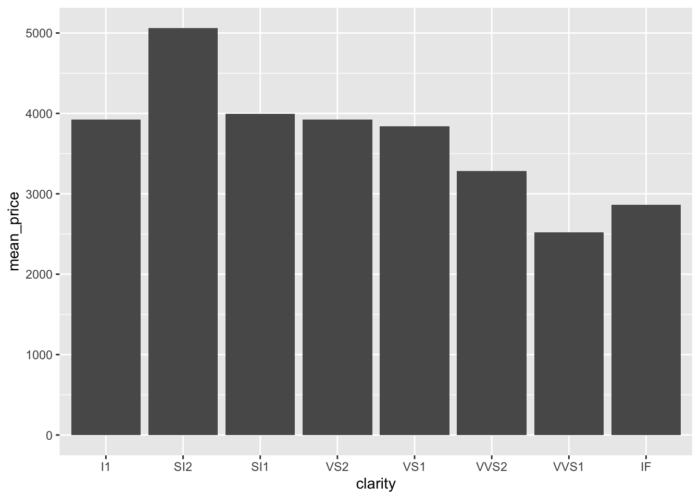

install.packages("tidyverse")R programming with tidyverse
Session overview
What will be covered:
- Stepping into the
tidyverse- What is
tidyverse? - Why should we use it?
- How do we use it?
- What is
tidyversestyle vs. base R style- Vectors and vectorisation
- Vectorisation with
map()vs.*apply() - Piping with
%>%and|>
ggplot2for data visualization- Grammar of graphics
- The typical flow
- Whole game
Stepping into the tidyverse
What is tidyverse?
tidyverseis a collection of R packages built for data science- All packages shared the same principle of tidy data (this will be very apparent later on!)
- Consists of 8 core packages, and a dozen more packages for various specific purposes
What is tidyverse?

Why tidyverse?
- Every function under
tidyverseshares a consistent structure and pattern. Making it very easy to implement and edit your R code - In general, your R code may look cleaner and easier to follow, compared to base R
- You just need to install everything once, instead of different packages for different things
- With piping, you eliminate the need of intermediary objects and nesting of functions (examples later)
Note
This is all subjective and your experience with tidyverse may varies
Why tidyverse?
Takeaway points
tidyverseis not a replacement of base R. It is just a collection of R packages- You don’t have to use
tidyversewhen using R tidyversehas most functions for data science needs. Though, there are times base R will be needed, and might be better/easier/faster- Understanding the principles and goals of
tidyversewill better your knowledge on good coding practices and R
How to use tidyverse
Start by installing it!
Note
Most packages will be installed. You might need some more packages, but generally it should cover most of your needs.
How to use tidyverse
Then load it into your R environment!
library(tidyverse)Warning: package 'ggplot2' was built under R version 4.3.1Warning: package 'dplyr' was built under R version 4.3.1Warning: package 'stringr' was built under R version 4.3.1── Attaching core tidyverse packages ──────────────────────── tidyverse 2.0.0 ──
✔ dplyr 1.1.4 ✔ readr 2.1.5
✔ forcats 1.0.0 ✔ stringr 1.5.1
✔ ggplot2 3.5.1 ✔ tibble 3.2.1
✔ lubridate 1.9.3 ✔ tidyr 1.3.1
✔ purrr 1.0.2
── Conflicts ────────────────────────────────────────── tidyverse_conflicts() ──
✖ dplyr::filter() masks stats::filter()
✖ dplyr::lag() masks stats::lag()
ℹ Use the conflicted package (<http://conflicted.r-lib.org/>) to force all conflicts to become errors
Tip
You can load specific packages like library(dplyr), but it doesn’t matter in most cases.
How to use tidyverse
Run this example code below to make sure everything is running normally
diamonds %>%
group_by(clarity) %>%
summarise(mean_price = mean(price)) %>%
ungroup() %>%
ggplot(aes(x = clarity, y = mean_price)) +
geom_col()
Free R tip
type ?function_name for help on how to use a function and see which package is it coming from
How to use tidyverse
Free R tip
add “tidyverse” into your Google searches when looking for R issues
tidyverse style vs. base R style
Vectors and vectorisation
What is a vector?
- A vector is a container of elements of similar classes
- For example, in math, \([1 2 3]\) is a vector of 3 integers
- Most things in R are vectors
- For example,
c(1, 2, 3)is a vector of 3numericelements, c("ab", "cd", "ef")is a vector of 3characterelements
- For example,
For-loops
- In programming, we typically use for-loops to iterate through elements within a vector
Vectorisation with map() vs. *apply()
- Recall what is “vectorisation”
Vectorisation with map() vs. *apply()
Vectorisation vs. looping